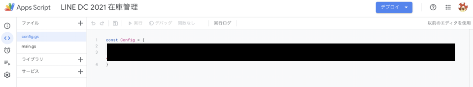
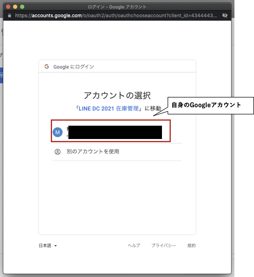

・イベントページ
https://linedevelopercommunity.connpass.com/event/218562/
・LINE Developer Community紹介！
チャンネル登録をお願いしますー！
・本日の資料
- Messaging API
- GAS(Google App Script) 、スプレッドシート
- Glide
- LIFF
少し行ったり来たりしますが、資料をもとに一緒に進めていきましょう。
4. LINE Developersへの登録
5. 今回のハンズオン用のスプレッドシートをコピー
6. Glideの準備とアプリ公開
7. LIFFの設定
8. Messaging APIの設定
9. GASの設定とデプロイ
10. Webhookの設定
11. 実際に動かしてみる！
1.LINE Developers への登録
LINE Developers（https://developers.line.biz/ja/）からログインします。

2.アカウントを入力
LINEアカウント・・・・・ 現在、利用しているLINEと連携することができます。
ビジネスアカウント・・・ メールアドレスで登録することができます。
※LINEアカウントだとスマホでQRコードを読み取ってログインができるなど簡単なのでお薦めです。（下図のような画面が表示されるので「QRコードログイン」を押します）
アカウントをお持ちの方は、ログインしてチャネル作成に進みます。
アカウントをお持ちでないかたは、「3.アカウントの新規作成」に進みます。
3.アカウントの新規作成
①初めての方は「アカウントの作成」を押下してください。

②「LINEアカウントで登録」または「メールアドレスで登録」を選択してください。
LINEアカウントで登録のほうがQRコードログインでいけるので簡単です。個人のLINEアカウントと連携します。LINEアカウントで登録は簡単ですので、ここではメールアドレスで登録の説明をします。

③登録するメールアドレスを入力してください。
④入力したメールアドレスに登録確認メールが届きますので「登録画面に進む」を押してください。
⑤名前とパスワードを入力して登録してください。

⑥登録確認画面で「登録」を押下

⑦ユーザー登録が完了しました。LINE DevelopersIDの作成を行います

⑧LINE開発者登録
開発者名とメールアドレスを入力し、LINE開発者契約の内容を確認しチェックをいれ、アカウントを作成します。
LINE Developersの画面が表示されます。
下記をクリックするとスプレッドシートが開かれますので、「ファイル」-「コピーを作成」を押してください。

任意の名前をつけて「OK」を押します。

1.アカウント作成
https://www.glideapps.com/ にアクセスし、右上にある「Log in」を押します。
アカウントをまだ持っていない場合は、「Sign in with Google」で先ほどコピーしたスプレッドシートと同じGoogleアカウントで連携します。

2.アクセス許可
GlideからGoogleドライブ上のファイル（スプレッドシート）にアクセスするため、アクセスを許可する必要があります。
3.新規アプリ作成
Glideのダッシュボードが表示されます。「New App」を押しアプリを新規作成します。
ここではアプリ名を「在庫管理」とし、「Continue」を押します。
Glideアプリ内で使うデータの元をどこで管理するか？選択します。
スプレッドシートと連携するので「Google Sheets」を押します。
Googleドライブ内のスプレッドシートが表示されますので、本ハンズオン用にコピーしたファイルを選択します。（下図では名称が異なりますが、先ほどコピーしたスプレッドシートを選択してください）
以下の様に「在庫管理アプリ」の初期画面が表示されます。
スプレッドシートのデータがリスト形式で表示されているのが分かります。
4.アプリ公開
右上にある「Publish」ボタンを押すと、初めて公開する場合は下記画面が表示されますので「Publish App」を押します。
APP LINKに任意の名前でアプリの名前（URL）を入力します。このアドレスがアプリのリンクとなり、後ほどLIFFのエンドポイントでもこのURLを指定します。
続いてLIFFの設定をしていきます。
1.プロバイダーの作成
LINE Developersの画面を開き、プロバイダーの「作成」をします。プロバイダーが1つもない場合は、最初にプロバイダーを作成します。
既にプロバイダーを利用しても問題ありません。
「プロバイダー名」は任意の名前で大丈夫です。

プロバイダが作成されると、以下のような画面が表示されます。
2.LINEログインチャネルの作成
新規チャネル作成で「LINEログイン」を作成します。
以下の通り入力・設定し、「作成」を押します。

3.LIFFの設定
チャネルが作成されると以下の画面が表示されます。
LIFFの設定をしていきましょう。
エンドポイントURLに、Glideアプリを公開した際のURLを設定します。
「LIFF」タブを選択し、「追加」を押します。
LIFFアプリ追加画面が表示されるので、以下の通り入力していきます。
入力できたら「追加」を押します。

4.公開設定
以上でLIFFアプリが作成されますが、非公開の状態のため公開に設定します。
「非公開」を押すと下記画面が表示されるので「公開」します。
ステータスが「公開済み」に変更されます。

以上でLIFFの準備ができました。
Messaging APIって？
https://developers.line.biz/ja/docs/messaging-api/overview/
1.Messaging APIチャネルを作成
LIFFの時と同様に、LINE Developerからチャネルを作成します。ここではチャネルの種類「Messaging API」にします。

以下の通り入力をしていきましょう。


「Message APIの設定」タブから以下の赤枠の部分を編集していきます。
2.応答メッセージの編集
「応答メッセージ」の「編集」を押すと「LINE Official Account Manager」の画面が開きます。下記の通り「応答メッセージ」を「オフ」、「Webhook」を「オン」に変更します。
3.チャネルアクセストークン発行
LINE Developersに戻り、チャネルアクセストークンを「発行」します。「発行」ボタンを押すと長い文字が表示されます。
GASって？
Google Apps Scriptの略で、Googleが提供しているプログラミング言語です。GASを使うことで、Googleの色々なサービス（GmailやGoogleカレンダーなど）をプログラムでから操作することができます。
1.プログラムの修正
コピーしたスプレッドシートを開き、GASのプログラムを編集していきます。
スクリプトエディタが起動します。
1回のクリックで起動しないことがあるので、その際は再度「スクリプトエディタ」をクリックしてください。

左のメニューから「config.gs」があるのでクリックします。
編集する場所は以下3箇所です。" " は削除しないでください。"と"の間を書き換えます。
const Config = {
SpreadSheetUrl: "https://docs.google.com/spreadsheets/d/xxxxxx/",
LineChanleAccessToken: "▲▲▲▲▲",
LiffURL: "■■■■■■■■■"
}上から順番に、
・スプレッドシートのID
・チャネルアクセストークン
・LIFF URL
です。
・スプレッドシートID
スプレッドシートを開いているブラウザのURLの以下の xxxxxx 部分です。
・チャネルアクセストークン
LINE Developerコンソールで発行した以下の長い文字列です。
・LIFF URL
LINEログインチャネルで作成した下記LIFF URLです。
変更したら必ず「保存」をしましょう。
変更が反映されていないと正常に動作しません。下記の様に保存されていない状態ではファイル名の横に●印がつきます。
「保存」ボタンを押して保存すると●印が消えます。

2.デプロイ
保存したらデプロイをします。
デプロイとはアプリを公開することを言います。公開することで、LINEで送ったメッセージがGASで受け取れるようになります。
右上にある「デプロイ 」の▼を押し、「デプロイを管理」を押します。

以下の画面が表示されるので、「デプロイメントの作成」を押します。
以下の画面にて、下記の通り設定したら「デプロイ 」を押します。
説明：任意の説明文
次のユーザーとして実行：自分
アクセスできるユーザー：全員
スプレッドシートにアクセスするために、アクセスの承認等を進めていきます。
資料に沿って進めていきましょう。


最後に「許可」をすることでデプロイ が完了します。
デプロイ が完了したら、上記ウェブアプリ URLをLINE Messaging APIのWebhookに設定します。
デプロイしたウェブアプリURLをWebhook URLに設定し「更新」します。
下記、LINE Developersに戻ります。
先ほど設定を飛ばした「Webhook設定」にて「編集」を押し、ウェブアプリURLを貼り付け「更新」を押します。
下記画面にて「Webhookの利用」が有効になっていることを確認し、「検証」を押します。設定が正しければ「成功」と表示されます。
以下など、エラーが表示された場合は、Webhookに設定したURL（デプロイ したWebアプリURL）が正しいか？を再度確認してみてください。

LINE Developers Messaging API設定にQRコードがあります。
スマホで読み取ってボットを友達追加してみましょう。
在庫一覧や追加などを押して動かして見ましょう。
本日のイメージはこんな感じでした。
LINEから送ったメッセージ（操作）はGASというプログラム（スクリプト）を通じて、スプレッドシートが読み書きされます。「追加」や「発注」など操作した結果がスプレッドシートに記録されていきますので、合わせて見てみましょう。

- 在庫一覧
スプレッドシートのstockシートで管理されている商品と在庫数を表示します。
stockシート記載の商品のみ操作できますので、増やしてみたい商品があればstockシートに商品名と在庫数を追加して試してみてください。 - 追加
在庫を追加する商品名と数を送信すると、スプレッドシートの当該商品の在庫数が増えます。 - 引出
在庫から引出する商品名と数を送信すると、スプレッドシートの当該商品の在庫数が減ります。 - 発注
発注する商品名と数を送信するとorderシートに記録されます。
ここでは記録するのみですが、Gmaiと連携して業者に発注メールを送るなどもできそうですね。 - LIFF
Glideアプリがトークルーム内に表示されます。
LIFFやGlideの設定が正常に行われていると「LIFF」を押すとLINE内にGlideアプリが起動します。
stock：在庫一覧
order：発注の記録
log：追加と引出の記録
ご質問等、お気軽にご連絡ください。